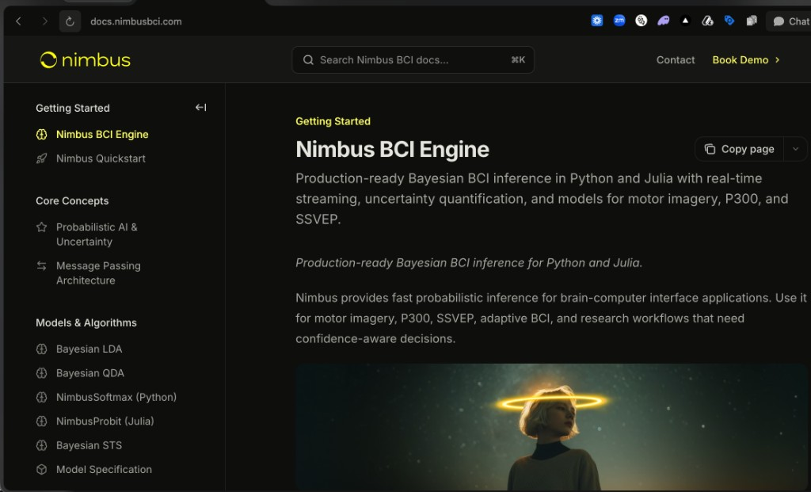

The Intel Inside for BCI
Real-time, Explainable Neural Inference
What is a BCI?
A Direct Pathway Between Brain and Machine
A Brain-Computer Interface (BCI) is a technology that captures brain signals, analyzes them, and translates them into commands that are relayed to an output device to carry out a desired action.
Essentially, BCI allows for the direct control of computers or other devices using only thought.
From non-invasive EEG headsets to implantable neural interfaces.

Non-Invasive BCI
(e.g., EEG Headset)

Invasive BCI
(e.g., Neural Implant)
Slide 4: Our Technological Core
Introducing Nimbus SDK: The Reactive Inference Engine
Nimbus SDK is a production-ready inference engine built for real-time brain signal processing. Unlike static ML models, it runs probabilistic models that continuously update as new data arrives — adapting to the brain's changing states without retraining.
At its core, Nimbus SDK uses reactive message passing on factor graphs — a technique pioneered by our team through RxInfer, an open-source Bayesian inference library developed by Lazy Dynamics, our co-founding company.
docs.nimbusbci.com →<10ms Inference Latency
Real-time processing of EEG and neural signals with sub-10ms end-to-end latency.
Continuous Adaptation
Models update on every new sample — no retraining cycles, no downtime.
Interpretable by Design
Probabilistic outputs with uncertainty estimates — built for regulatory transparency.
Slide 7: Product Offering
The "Intel Inside" for Neurotechnology
- A Core Engine: A powerful inference engine deployable in the cloud or at the edge.
- Pre-built Models: A library of models for common BCI paradigms (e.g., motor imagery, SSVEP, P300).
- Developer Tools: A comprehensive SDK and API for seamless integration into any neurotech stack.

Slide 12: Business Model
Two Independent Revenue Streams
1 Nimbus Studio SaaS
ModelFreemium SaaS for researchers & BCI consumers
Validation✓ 80+ waiting list
2 Nimbus SDK
ModelB2B co-development + per-unit royalties
Validation✓ BrainBit & PiEEG contract
Nimbus Studio
Freemium SaaS — researchers & BCI consumers

$49 – $199
/month per seat
- ✓Free tier — unlimited pipeline building, community support
- ✓Pro ($49/mo) — real-time execution, export, priority support
- ✓Team ($199/mo) — shared workspaces, advanced models, SLA
✓ 80+ on waiting list — zero paid marketing
Nimbus SDK
B2B co-development — hardware startups

$20K – $150K
per contract + equity/royalties
- ✓9-month co-development — full team + advisors access
- ✓RxInfer Pro license — embedded in partner hardware
- ✓Per-unit royalty — recurring revenue on every device shipped
✓ 1 commercial codevelopment contract: BrainBit & PiEEG
Slide 18: The Team
Our Founding Team & Expertise


Slide 19: Advisory Board
Guidance from World-Class Scientists
For context: Yann LeCun (ex-Meta Chief AI Scientist) averages ~50K citations/year on Google Scholar.
Jeff Beck
Professor of Computational Neuroscience
Duke University
7,169 total citations
~360/year • h-index 28
Computational neuroscience & Bayesian brain models. Co-author of landmark paper cited 1,955×.
Ryan Smith
Research Associate Professor
Laureate Institute for Brain Research
8,229 total citations
~1,400/year • h-index 48
Active Inference & BCI translation. Collaborates with Karl Friston (UCL).
Bert de Vries
Professor of Signal Processing & ML
Eindhoven University of Technology
3,603 total citations
~95/year • h-index 26
Co-founder of GN Hearing (Jabra). Creator of RxInfer.jl — the core engine of Nimbus.
Alexander Kuck
Principal Engineer
Medtronic
Industry practitioner
Neurotechnology & medical devices
Expert in BCI hardware integration, medical device software, and neurotechnology commercialization.